Student Exercises
Problems 1–5 require analytical solutions, Problems 6 and 8 are SIMULINK problems.
| 1: | Design an IMC for the following process model:
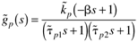
Assume that the all-pass factorization technique is used. Assuming the model is perfect, sketch the transient response of y(t) to a step setpoint change in r(t). | | 2: | Consider the following IMC block diagram. Find the closed-loop transfer functions relating the load [l(s)] and the setpoint [r(s)] to the output [y(s)]. Assume that the model is not perfect. 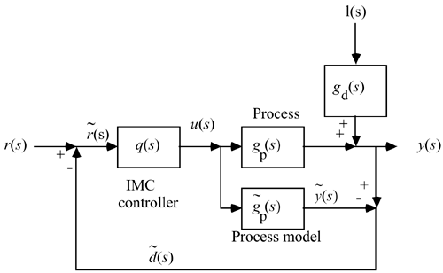 | | 3: | A biochemical reactor with several components has the following linearized model, which relates the biomass concentration to the dilution rate:
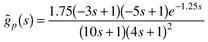
Design an IMC, q(s), for this process, assuming that (i) an all-pass filter is used, and (ii) the controller is strictly proper (order of the denominator is greater than the order of the numerator). Qualitatively sketch the type of closed-loop response to a setpoint change that you would expect if the model is perfect.
| | 4: | A process has the following relationship between the input and output:
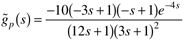
Design an IMC controller for this process. Let q(s) be semiproper (order of denominator is equal to the order of numerator) and use an all-pass factorization. Find the closed-loop transfer function assuming a perfect model. Sketch the closed-loop response to a step setpoint change. | | 5: | Consider the closed-loop response for IMC when the model is not perfect. Show that there is no offset for a setpoint change for the following process model and actual process transfer functions. Also, find the minimum value of l that assures closed-loop stability for this system.
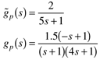
| | 6: | Design an IMC for the following process:
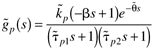
where 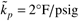, 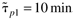, 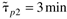, 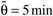, and b = 6 min.
For this part, do not factor out the right-half-plane zero to form the controller. Perform simulations to show that the manipulated variable grows unbounded when a step setpoint change is made, although good performance of the output is achieved. For the following parts, assume that the "all-pass" factorization technique is used. Assuming the model is perfect, plot the transient response of y(t) to a unit step setpoint change in r(t) as a function of l. (Show your control loop diagram.) Discuss how dead-time uncertainty degrades the closed-loop performance (show several curves on one plot) and show how the sensitivity depends on the filter constant, l. Show how gain uncertainty degrades the closed-loop performance (show several curves on one plot) and show how the sensitivity depends on the filter time constant, l. Now, assume that there is no setpoint change but that there is a step disturbance. Assume that the disturbance transfer function is equal to the process transfer function. Compare and contrast the response of the output with the open-loop control response.
For the following parts, assume that the all-pass factorization technique is not used.
Assuming the model is perfect, plot the transient response of y(t) to a unit step setpoint change in r(t) as a function of l. (Show your control loop diagram.) Discuss how dead-time uncertainty degrades the closed-loop performance (show several curves on one plot) and show how the sensitivity depends on the filter constant, l. Show how gain uncertainty degrades the closed-loop performance (show several curves on one plot) and show how the sensitivity depends on the filter time constant, l. Now, assume that there is no setpoint change, but that there is a step disturbance. Assume that the disturbance transfer function is equal to the process transfer function. Compare and contrast the response of the output with the open-loop control response.
| | 7: | Packed-bed reactors often exhibit "wrong way" (inverse response) behavior. You are responsible for the control-system design for a packed-bed reactor that has the following step response behavior, where a step decrease in steam valve position was made at t = 5 minutes. 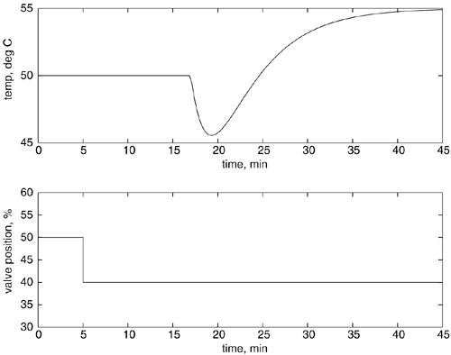
You have developed the following process model (the time unit is minutes):
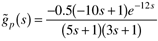
What are the units for the process gain? Design an IMC for this process. Use the all-pass factorization for the RHP zero, and assume that q(s) is semiproper (numerator order in s is equal to the denominator order in s). Assuming a perfect model, plot qualitatively how the temperature will respond to a step setpoint change of 1°C. It is desirable to make certain that the control valve position, immediately after a 10°C setpoint change, does not move more than 25%. What is the smallest value of l that you can use? Show your work.
| | 8: | Consider the following isothermal chemical reactor, where the dilution rate (feed flow rate per unit volume of reactor) is manipulated to achieve a desired concentration of product. 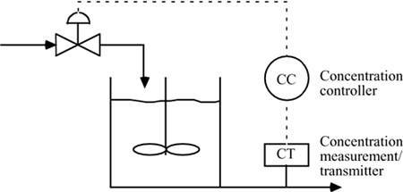
The process model is
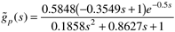
which has a RHP zero (inverse response) and a time delay (due to the concentration measurement device).
Design an IMC for this process.
For this part, do not factor out the RHP zero to form the controller. Perform simulations to show that the manipulated variable grows unbounded when a step setpoint change is made, although good performance of the output is achieved.
For the following parts, assume that the all-pass factorization technique is used.
Assuming the model is perfect, plot the transient response of y(t) to a unit step setpoint change in r(t) as a function of l. (Show your control loop diagram.) Discuss how dead-time uncertainty degrades the closed-loop performance (show several curves on one plot) and show how the sensitivity depends on the filter constant, l. Show how gain uncertainty degrades the closed-loop performance (show several curves on one plot) and show how the sensitivity depends on the filter time constant, l. Now, assume that there is no setpoint change but that there is a step disturbance. Assume that the disturbance transfer function is equal to the process transfer function. Compare and contrast the response of the output with the open-loop control response.
For the following parts, assume that the all-pass factorization technique is not used.
Assuming the model is perfect, plot the transient response of y(t) to a unit step setpoint change in r(t) as a function of l. (Show your control loop diagram.) Discuss how dead-time uncertainty degrades the closed-loop performance (show several curves on one plot) and show how the sensitivity depends on the filter constant, l. Show how gain uncertainty degrades the closed-loop performance (show several curves on one plot) and show how the sensitivity depends on the filter time constant, l. Now, assume that there is no setpoint change but that there is a step disturbance. Assume that the disturbance transfer function is equal to the process transfer function. Compare and contrast the response of the output with the open-loop control response.
|
|